Cuiabá – MT
Site em
construção
Toda ação constrói!
Estamos construindo o novo site do Instituto João de Barro, com nossos projetos e notícias. Os documentos oficiais já estão disponíveis abaixo.
Av. Haiti esquina com Rua Caracas, nº 610, Sala 05 – Centro Empresarial América, Cuiabá – MT, CEP 78060-618+55 (65) 99215-1877
Transparência
Documentos oficiais
O Instituto João de Barro torna públicos seus documentos de constituição e a composição da sua diretoria, para que qualquer pessoa possa consultar como a entidade está organizada.
- Razão social
- Instituto João de Barro – IJB
- CNPJ
- 17.984.579/0001-77
- Natureza jurídica
- Associação privada sem fins lucrativos
- Fundação
- 10/04/2013
-
Comprovante de Inscrição no CNPJ
Cartão CNPJ emitido pela Receita Federal. Associação privada sem fins lucrativos, aberta em 10/04/2013.
-
Ata da Assembleia Geral Extraordinária e Estatuto Social
Alteração da denominação para Instituto João de Barro – IJB, objetivos e endereço, com o Estatuto Social registrado em cartório.
-
Ata de Recomposição da Diretoria
Eleição da Diretoria Executiva para o mandato até 31/05/2027. Registrada no 1º Serviço Notarial e Registral de Cuiabá em 04/03/2026.
-
Termo de Posse da Diretoria
Posse da Presidente e da Diretoria eleitas, registrada no 1º Serviço Notarial e Registral de Cuiabá.